6 Zobrazovanie dát
Vhodné zobrazenie dát je tak trochu umenie. Treba nájsť vhodný typ grafu, farieb, písiem na plynulé odkomunikovanie myšlienky. Čo umenie nie je, je urobiť zlú vizualizáciu.
6.1 Zlé vizualizácie
Pri nasledujúcich obrázkov nebude príliš ťažké pochopiť, v čom sú problematické. V niektorých prípadoch ide o subjektívne hodnotenie.
Častokrát proporcie nie sú zachované. Toto môže byť použité ako manipulatívna stratégia na demonštrovanie veľkého rastu.
Obrázok 6.1: Obrovský nárast?
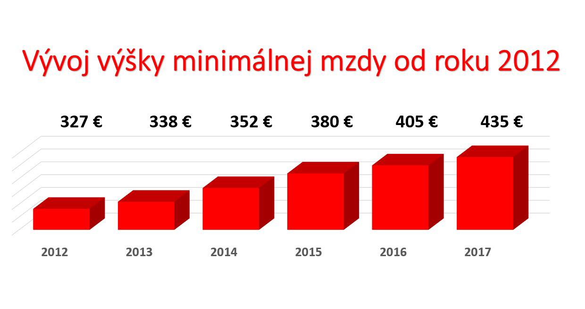
Obrázok 6.2: Späťnásobila sa minimálna mzda medzi 2012 a 2017?
Koláčové grafy sú notoricky problematické a snažíme sa im vyhýbať, najmä ak je kategórií viacej a proporcie sú náročné na porovnávanie. Špeciálne zlé sú vždy a všade 3D koláčové grafy. Tie nesmierne skresľujú porovnávanie.
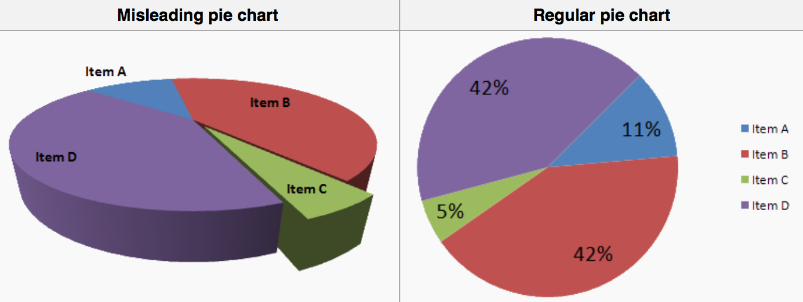
Obrázok 6.3: Koláčové grafy radšej nie.
Trojrozmerné alebo aj dvojrozmerné piktogramy sú problematické tiež. Ak je ich úlohou oživiť prezentáciu, tomu sa dá porozumieť. Vyhýbame sa aj 3D prvkom.
Obrázok 6.4: Bolo predajov domov v 2001 dvakrát viacej, štyrikrát viacej alebo osemkrát toľko ako v roku 2000?
Obrázok 6.5: Zdroj: vlastná tvorba.
Niekedy sú vizualizácie zlé lebo sú necitlivé, ako v týchto dvoch prípadoch.
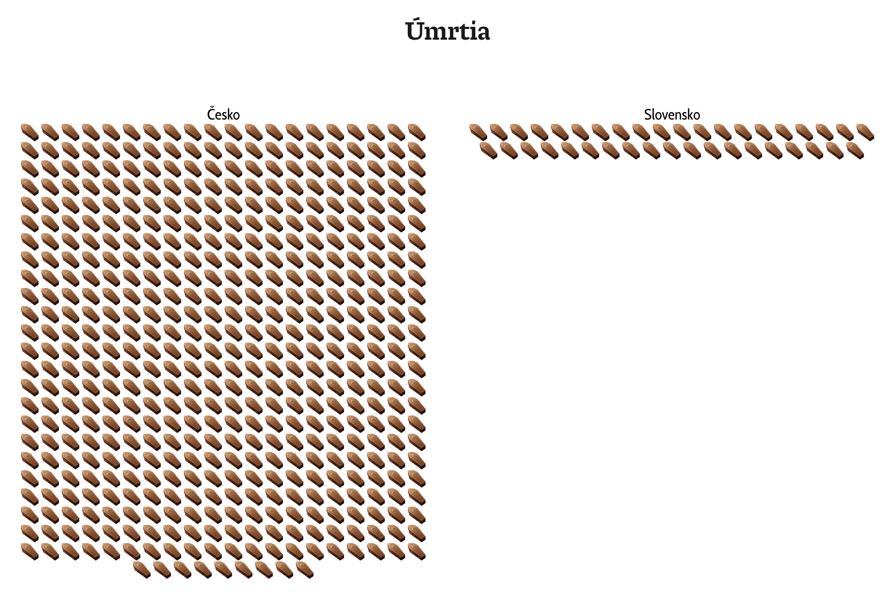
Obrázok 6.6: Naozaj to nešlo zobraziť nudnejšie?
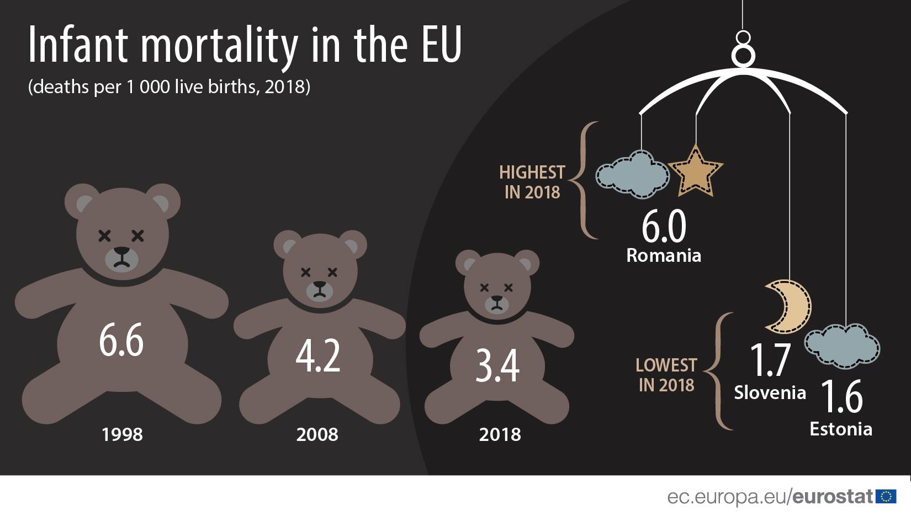
Obrázok 6.7: Energia využitá na tvorbu tejto prezentácie nebola múdra investícia.
Niekedy príliš kreatívna ba priam manipulatívna transformácia vertikálnej osi chce pomôcť niečo odkomunikovať (napríklad nie príliš prudký nárast).
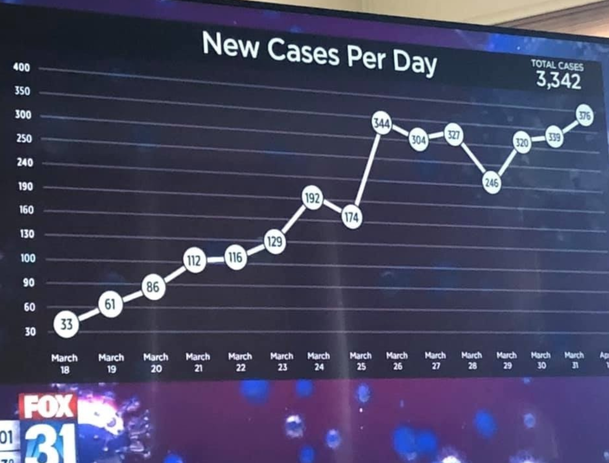
Obrázok 6.8: Čo je to na vertikálnej osi?
6.2 Dobré vizualizácie
Dobrá vizualizácia je ako Rembrandtova kresba. Zaujme, odomunikuje emóciu, príbeh, vzbudí záujem a núti klásť otázky.
Pozrime sa na nasledovný obrázok.
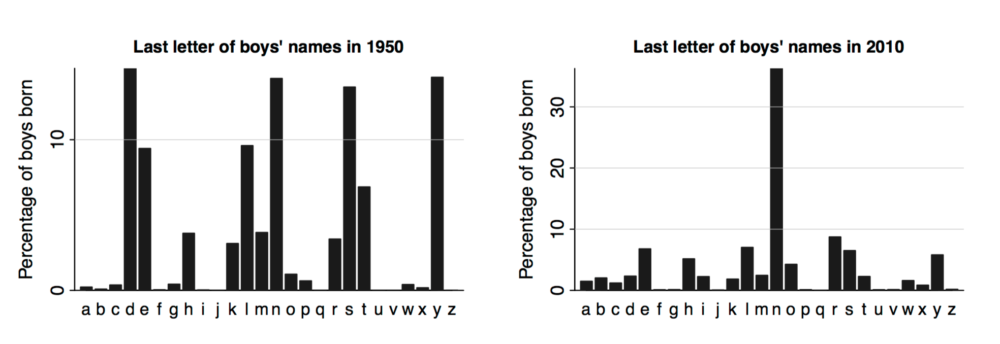
Okamžite si všimneme dominantné postavenie písmena n na pravej strane. Ktoré sú to tie krstné mená, ktoré končia na n? Prečo sa distribúcia tak zmenila? Človek má chuť okamžite hľadať, ktoré sú to mená(?) (John, Brandon, Ryan, Jonathan, Christian, Austin, Dylan, Ethan, Benjamin…). Tak či onak, tento obrázok je úspešný v tom, že zaujme.Všimnime si vzťah medzi výdavkami na zdravotnú starostlivosť a očaká vanou dĺžkou života.
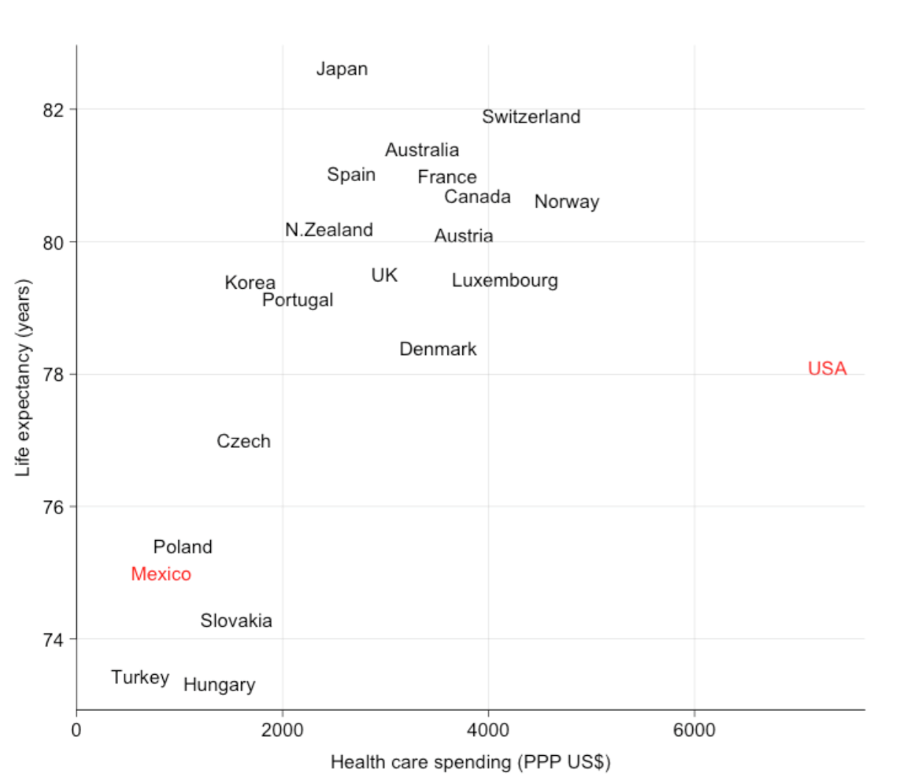
Zvýraznené dve krajiny - USA a Mexiko sú susedné. Je okamžite zreteľné, že USA sú veľmi iné ako ostatné ekonomicky rozvinuté štáty. Namiesto sledovania čísel v tabuľkách máme túto informáciu okamžite.Podobným príkladom, z ktorého vyvstáva mnoho otázok je tento:
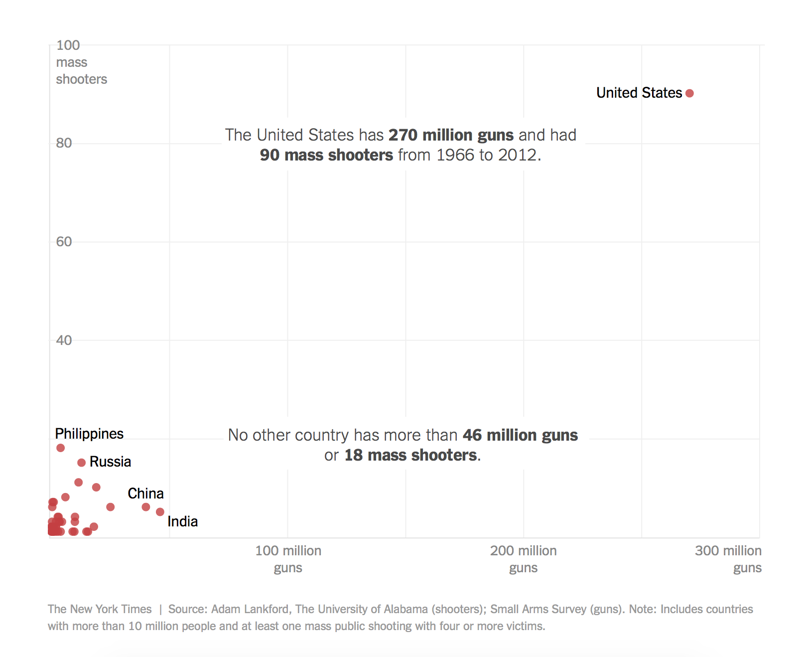
USA je ohromne iná krajina, čo sa týka zbraní. Veľmi veľmi iná. Grafické zobrazenie nám umožní tento rozdiel “pocítiť”, tým, že vidíme vzdialenosti. Porovnáme si najextrémnejšie protipóly v ostatku sveta - Filipíny a India. Vidíme ako sú vzdialené Rusko a Čína. Žiadne z týchto rozdielov ani zďaleka neobsiahnu rozdiel medzi USA a zvyškom sveta.6.3 Vizualizácia v Rku: ggplot2 knižnica
Knižnica ggplot2 je veľmi populárnym spôsobom na vytváranie vizualizácií. Má vnútornú logiku: každý objekt sa skladá z vrstiev, ktoré majú určité atribúty. Názov ggplot2 pochádza z “Grammar of Graphics”.
6.3.1 Zobrazenie závislosti dvoch premenných
Začnime príkladom, zobrazme si spotrebu aút (dataset mpg z knižnice ggplot2), konkrétne vzťah medzi diaľničným dojazdom v míľach hwy oproti objemu motora v litroch displ.

Tento príkaz inicializuje grafické okno, dáta, teda parameter data vstupujú vo formáte data.frame. Funkcia geom_point() zobrazuje jednu vrstvu, konkrétne body. Táto potrebuje
data- tie sú už zadefinované globálne v rámci grafického oknaggplotmapping- musíme vedieť, ktoré premenné majú byť na osiach. Hodnotaaes(x = displ, y = hwy)nastaví horizontálnu os na premennúdispla vertikálnu os nahwy
V datasete máme informáciu aj o tom, v akej triede je auto (class). Túto informáciu môžeme zobraziť rôznymi spôsobmi: napríklad nastavením
- farby (
color) - priesvitnosti (
alpha) - tvaru (
shape)
bodov.
Rovnaký výsledok dostaneme aj pomocou použitia pipeline-u %>% z knižnice dplyr. Knižnica tidyverse rovno načíta ggplot2 aj dplyr.
Grafické parametre môžeme nastaviť aj nezávisle od hodnôt nejakej premennej. Tieto parametre sú nastavené špecificky pre vrstvu geom_point. Nižšie je príklad keď je skombinovaná jedna vrstva s druhou. V druhej vrstve je vybraný iný parameter data, konkrétne len tie autá, ktoré majú 4 valce. Pre viacero príkladov stačí keď do konzoly zadáte vignette("ggplot2-specs").
library(cowplot)
g1 <- ggplot(data = mpg) +
geom_point(mapping = aes(x = displ, y = hwy, color = class))
g2 <- ggplot(data = mpg) +
geom_point(mapping = aes(x = displ, y = hwy, alpha = class))
g3 <- ggplot(data = mpg) +
geom_point(mapping = aes(x = displ, y = hwy, shape = class))
g4 <- ggplot(data = mpg) +
geom_point(mapping = aes(x = displ, y = hwy),
color = "blue", alpha = 0.5, shape = 2) +
geom_point(data = mpg %>% filter(cyl == 4),
mapping = aes(x = displ, y = hwy),
color = "red", alpha = 0.3, shape = 1,
size = 4)
plot_grid(g1, g2, g3, g4, ncol = 2, labels = "AUTO")## Warning: Using alpha for a discrete variable is not advised.## Warning: The shape palette can deal with a maximum of 6 discrete values because
## more than 6 becomes difficult to discriminate; you have 7. Consider
## specifying shapes manually if you must have them.## Warning: Removed 62 rows containing missing values (`geom_point()`).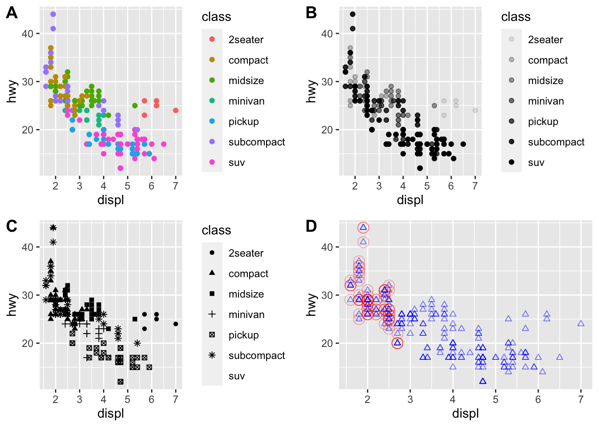
Môžeme sa pozerať na závislosť premenných hwy a displ pre rôzne kombinácie typu pohonu drv (predný, zadný, 4x4) a počet valcov cyl.

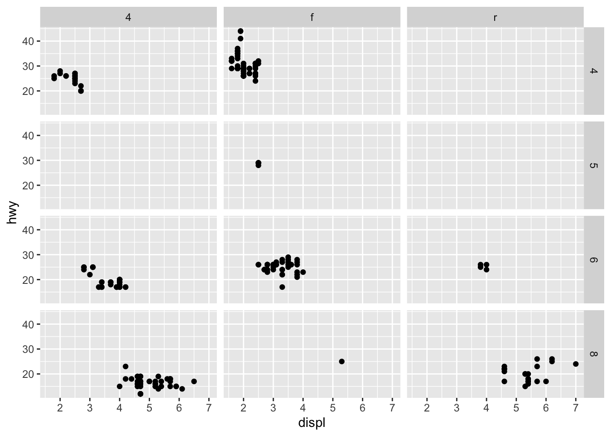
Parametre data a mapping môžu ísť priamo do ggplot objektu, takže ich netreba separátne volať pre rôzne vrstvy. Tu je navyše vrstva geom_smooth, ktorá vyhladí dáta - preloźí nimi aproximačnú krivku.
## `geom_smooth()` using method = 'loess' and formula = 'y ~ x'
Rko nás upozorní, ktorú vyhladzovaciu krivku použilo.
Nasledujúci kód uloží obrázok ako vo formáte pdf s danými veľkosťami.
## `geom_smooth()` using method = 'loess' and formula = 'y ~ x'6.3.2 Zobrazenie distribúcie premennej
Vygenerujme si dáta, ktore budeme zobrazovať (inšpirované nasledovných odkazom).
set.seed(2930)
data_test <- data.frame(
school=factor(rep(c("8r_gym", "4r_gym"), each=40)),
score=round(c(rnorm(40, mean=75, sd=8), rnorm(40, mean=65, sd=5)))
)
ggplot(data = data_test, mapping = aes(x=score)) +
geom_histogram()## `stat_bin()` using `bins = 30`. Pick better value with `binwidth`.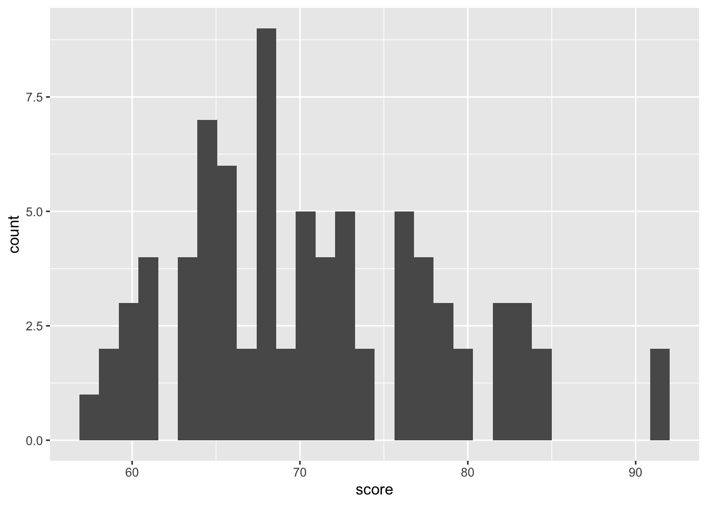
Tu si skúsime ponastavovať rôzne vlastnosti vrstvy geom_histogram. Vertikálnu čiaru pridáme pomocou geom_vline a odhad hustoty cez geom_density.
g1 <- ggplot(data = data_test, mapping = aes(x=score)) +
geom_histogram(binwidth=1, color="black", fill="white")
g2 <- ggplot(data = data_test, mapping = aes(x=score)) +
geom_histogram() +
geom_vline(aes(xintercept=mean(score)),
color="blue", linetype="dashed", size=1)## Warning: Using `size` aesthetic for lines was deprecated in ggplot2 3.4.0.
## ℹ Please use `linewidth` instead.
## This warning is displayed once every 8 hours.
## Call `lifecycle::last_lifecycle_warnings()` to see where this warning was
## generated.g3 <- ggplot(data = data_test, mapping = aes(x=score)) +
geom_histogram(aes(y=..density..)) +
geom_density(alpha=.2, fill="red")
g4 <- ggplot(data = data_test, mapping = aes(x=score)) +
geom_histogram()
plot_grid(g1, g2, g3, g4, ncol = 2, labels = "AUTO")## `stat_bin()` using `bins = 30`. Pick better value with `binwidth`.## Warning: The dot-dot notation (`..density..`) was deprecated in ggplot2 3.4.0.
## ℹ Please use `after_stat(density)` instead.
## This warning is displayed once every 8 hours.
## Call `lifecycle::last_lifecycle_warnings()` to see where this warning was
## generated.## `stat_bin()` using `bins = 30`. Pick better value with `binwidth`.
## `stat_bin()` using `bins = 30`. Pick better value with `binwidth`.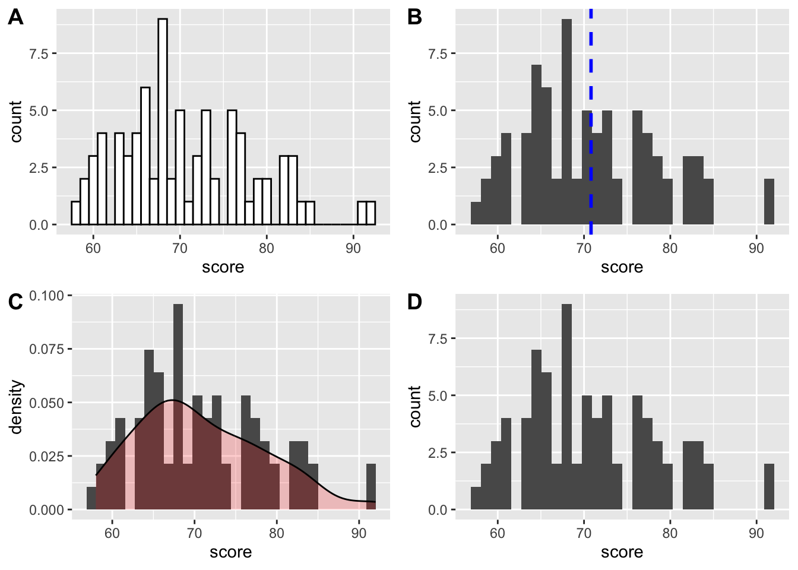
Pozrite sa na tento kód a zhodnoťte, čo robí ten ktorý príkaz.
library(dplyr)
mu <- data_test %>% group_by(school) %>% summarise(group_means = mean(score))
ggplot(data_test, aes(x=score, color=school, fill=school)) +
geom_histogram(aes(y=..density..), position="identity", alpha=0.5)+
geom_density(alpha=0.6)+
geom_vline(data=mu, aes(xintercept=group_means, color=school),
linetype="dashed")+
scale_color_manual(values=c("#999999", "#E69F00", "#56B4E9"))+
scale_fill_manual(values=c("#999999", "#E69F00", "#56B4E9"))+
labs(title="Score histogram",x="Score(points)", y = "Density")+
theme_classic() +
theme(legend.position="bottom")## `stat_bin()` using `bins = 30`. Pick better value with `binwidth`.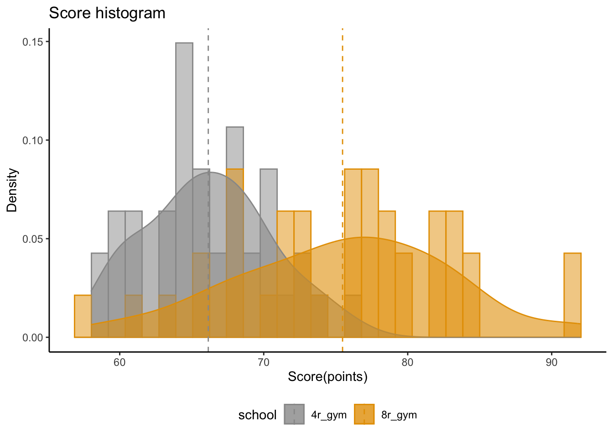
Na zobrazovanie distribúcie je užitočný aj boxplot. Nasledujúce obrázky (inšpirované týmto odkazom) sú vytvorené pomocou vrstiev geom_boxplot, geom_dotplot a geom_jitter.
g1 <- ggplot(data = data_test, mapping = aes(x = school, y = score)) +
geom_boxplot()
g2 <- g1 +
geom_dotplot(binaxis='y', stackdir='center', dotsize=1)
g3 <- g1 +
geom_jitter(shape=16, position=position_jitter(0.1))
g4 <- ggplot(data = data_test, mapping = aes(x = school, y = score, color = school)) +
geom_boxplot() +
geom_jitter(shape=16, position=position_jitter(0.1))
g5 <- ggplot(data = data_test, mapping = aes(x = school, y = score, fill = school)) +
geom_boxplot() +
geom_jitter(shape=16, position=position_jitter(0.1))
g6 <- ggplot(data = data_test, mapping = aes(x = school, y = score, fill = school)) +
geom_boxplot() +
geom_jitter(shape=16, position=position_jitter(0.1)) +
scale_fill_grey() +
theme_classic()
plot_grid(g1, g2, g3, g4, g5, g6, ncol = 2, labels = "AUTO")## Bin width defaults to 1/30 of the range of the data. Pick better value with
## `binwidth`.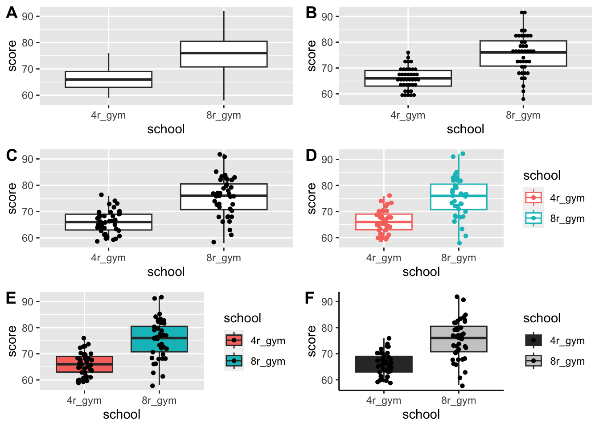
6.4 Niektoré princípy
Individuálnym výstupom rozumieme na základe porovnávania podobných objektov.
Toto si vždy opakujeme, keď si nie sme nejakou voľbou istí. Toto je vynikajúca séria článkov od Lisy Charlotte Muth, odporúčam tiež prehľadový článok, knihu o prezentáciách a vizualizáciách od Jonathana Schwabisha.
- Zvoľte správny typ grafu.
- Sumárne štatistiky zavádzajú.
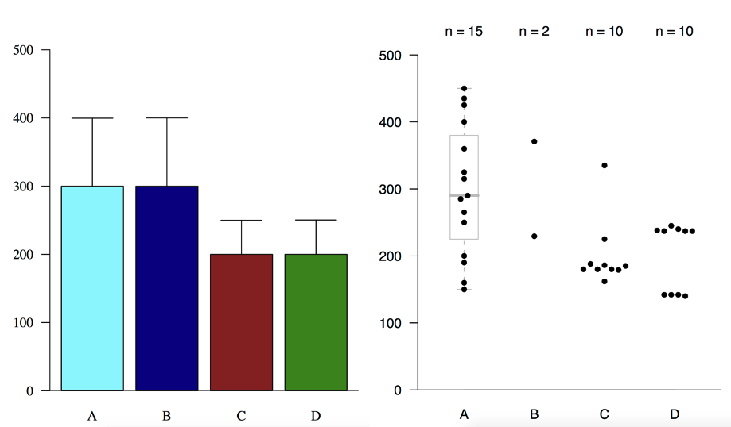
Obrázok 6.9: Tieto dátové vzorky majú rovnaké sumárne štatistiky.
- Je užitočné zobraziť surové dáta.
- Dátový bod = jedna machuľa atramentu.
- Ďalšie machule pridávame len ak nám pomôžu pochopiť niečo nové.
- Využite moment prekvapenia vo svoj prospech.
- Zvýraznite dôležité elementy grafu. Napríklad ten najdôležitejší dátový bod alebo podskupinu. Označovať môžete priamo v grafe aj textom.
- Zjednodušujte. Vynechajte nepotrebné grafické elementy, menej je niekedy viacej.
- Graf by mal byť samovysvetľujúci, na jeho základné pochopenie by malo stačiť pozrieť sa na graf a príslušný popis.
- Označenie osí musí byť zrozumiteľné. Prispôsobte tomu veľkosť a typ písma. V počítačovej podobe preferujeme písmo bez pätiek. V tlačenej podobne naopak pätkové písmo. Čísla sa lepšie porovnávajú ak sú tabulované (majú rovnakú šírku) a liniovité (majú rovnakú výšku).
- Farebné elementy lepšie vyniknú na sivom alebo (ako čistobielom) podklade. Bezpečnou voľbou na podklad je tiež teplá, veľmi svetlá a málo saturovaná farba. Farby sa zväčša používajú na vysvetľovanú premennú, nie na prediktory. Volíme menej farieb ak sa to dá, napríklad spojených niektorých kategórií a ideálne volíme farebnú škálu zrozumiteľnú aj pre čiastočne farboslepých. Farbám sa môžeme vyhnúť aj tak, že skupiny odlíšime symbolmi, vzormi alebo typom čiary. Rôzne mediá, inštitúcie alebo spoločnosti používajú fixné farebné palety aby bola prezentácia farebne jednotná.
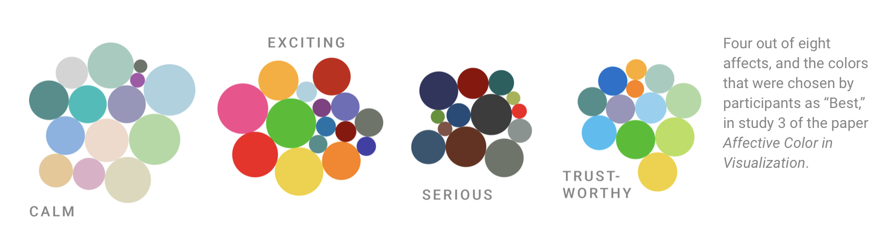
Obrázok 6.10: Vybrať si vhodnú farebnú identitu je náročné. Zdroj: https://blog.datawrapper.de/colors-for-data-vis-style-guides/
- V prípade rôznych názorov je užitočné hľadať konsenzus v tíme.
Individuálnym výstupom rozumieme na základe porovnávania podobných objektov.
6.5 Cvičenia
R súbor k cvičeniam (riešenia) 26.10.2023
R súbor k cvičeniam (riešenia) 9.11.2023
Cvičenie 6.1 (Znovu filmy) Použite túto náhodnú podvzorku filmov z knižnice ggplot2movies.
library(ggplot2movies)
library(eatATA)
set.seed(224)
vars <- c("year","length","budget","rating","votes")
catVars <- names(movies)[18:23]
ind <- which(rowSums(movies[,18:23])==1)
ind2 <- sample(ind,1000)
data_sam <- movies[ind2,c(vars, catVars)]
data_sam <- dummiesToFactor(data_sam, catVars, facVar = "category")
data_sam <- data_sam %>% mutate(era = as.factor(50*floor(data_sam$year/50)))
levels(data_sam$era) <- c("1850-1899", "1900-1949", "1950-1999", "2000-")Čo presne sme tu urobili?
Teraz zreprodukujte tieto grafy:
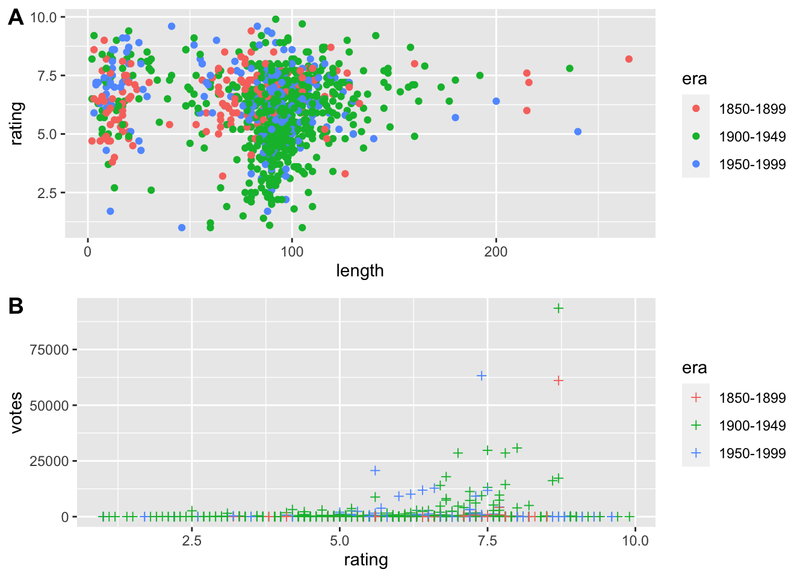
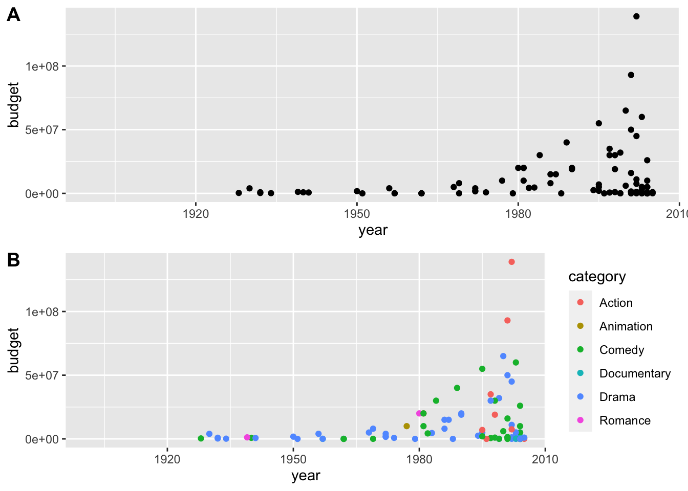
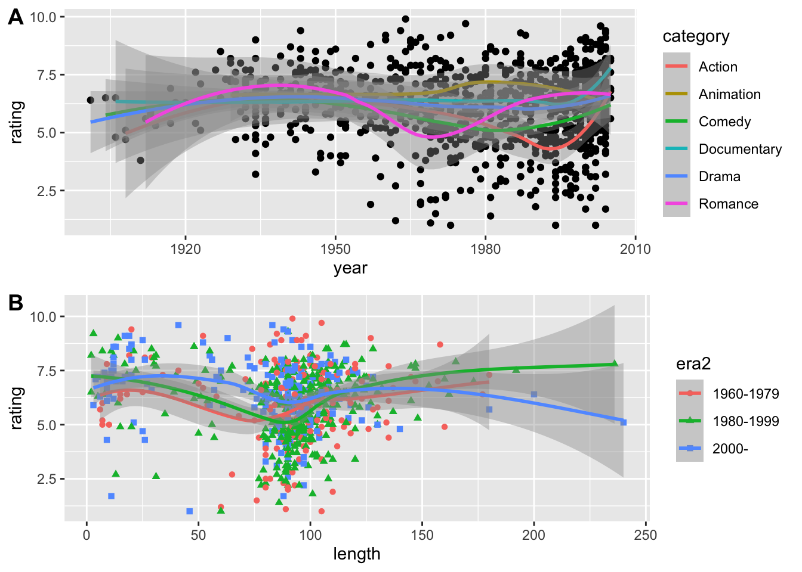
## `stat_bin()` using `bins = 30`. Pick better value with `binwidth`.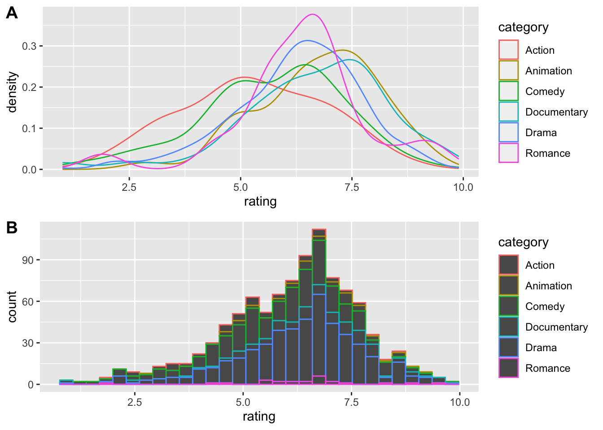
## Bin width defaults to 1/30 of the range of the data. Pick better value with
## `binwidth`.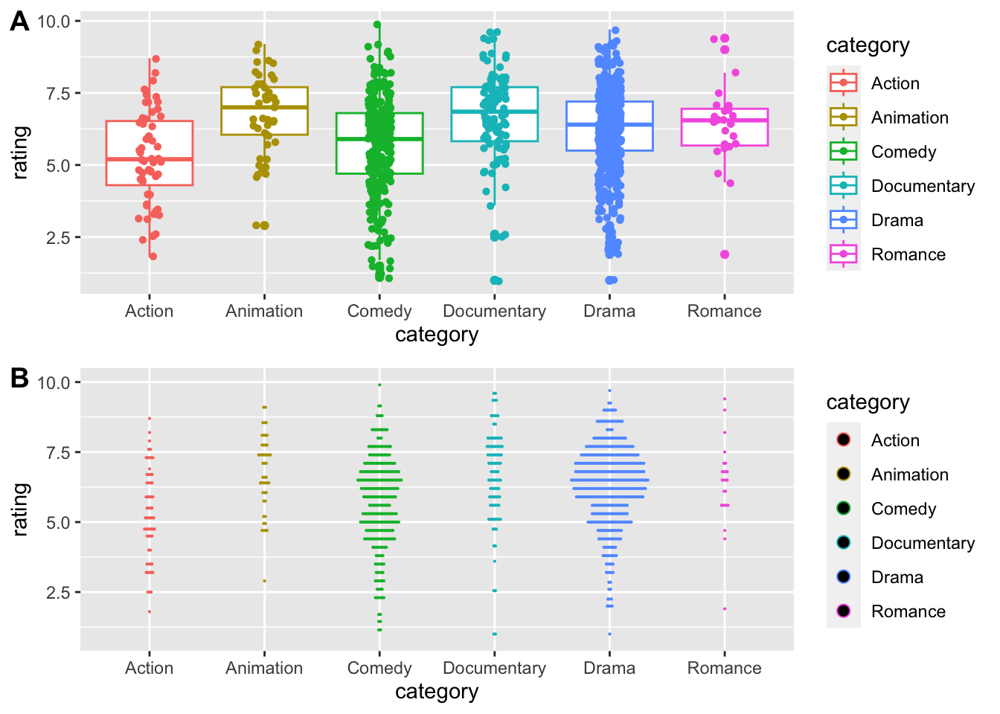
(Pri poslednom grafe potrebujete vytvoriť novú premennú.)
6.6 Bonus
Dáta vedia rozprávať príbehy. Je dôležité pozerať sa na dáta z rôznych strán, uhlov, aby sme pochopili do hĺbky všetky skryté súvislosti v ich plnej rozmanitosti.
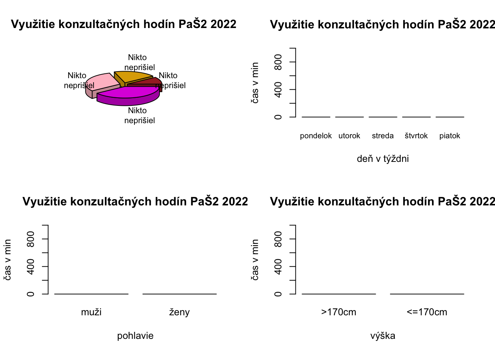
6.7 Domáca úloha 2
Deadline je 13.11.2023 o 20:00. Váš kód aj ostatné pomocné súbory (napríklad dáta) mi zabaľte do jedného (1) zip súboru (nie rar súbor, nie OneDrive folder) v tvare du2_MenoPriezvisko.zip (napr. du2_PeterKovac.zip) a pošlite na email miroslava.sartorisova@umb.sk. Kód musí byť spustiteľný a podrobne okomentovaný. Odovzdávate mi Vašu vlastnú prácu.
Cvičenie 6.2 (DÚ 2.1 študent na teste) Náhodná premenná \(X\) dáva výsledok o počte správnych odpovedí na záverečnej skúške. Tá má 50 otázok, pravdepodobnosť správnej odpovede študenta Doriána Škvrnitého je \(0.65\). Spočítajte teoretickú strednú hodnotu a varianciu. Urobte program na simuláciu strednej hodnoty a variancie a zistite, koľko simulácií potrebujete, aby sa odhadnutá stredná hodnota blížila teoretickej aspoň na 2 desatinné miesta. Opíšte svoje uvažovanie.
Cvičenie 6.3 (DÚ 2.2 malinové kríky) V laboratóriu máte 2 skupiny malinových kríkov. Na prvej (experimentálnej) testujete nové hnojivo na 20 kríkoch, a v druhej (kontrolnej) máte tiež 20 kríkov. Počet malín na kríku v experimentálnej skupine sa dá modelovať normálnym rozdelením so strednou hodnotou \(50\) a varianciou \(16\). Počet malín na kríku v druhej skupine sa dá modelovať normálnym rodzelením so strednou hodnotou \(35\) a varianciou \(25\). V oboch skupinách zrátate počet malín na kríkoch. Aká je pravdepodobnosť, že na kríkoch v prvej skupine je viac malín? Koľko by muselo byť kríkov v druhej skupine, aby táto pravdepodobnosť bola 50%?
Cvičenie 6.4 (DÚ 2.3 turizmus) Stiahnite si dataset o medzinárodných turistických výletoch (International tourist trips) zo stránky Our World In Data.
Zobrazte počet turistov za jednotlivé roky na Slovensku a v jeho susedných krajinách pomocou knižnice ggplot2.
Jednotlivé krajiny zobrazte rôznymi farbami a pridajte rovné čiary, ktoré budú kopírovať dáta za posledných 20 rokov pre rôzne krajiny (napr. pomocou vrstvy geom_smooth() s parametrom method="lm"). Stručne okomentujte, čo ste sa dozvedeli.
Urobte Váš graf zrozumiteľným a vizuálne príťažlivým vhodnou voľbou grafických elementov (farieb, typom a veľkostou písiem, popismi, nápisov, legendou…).
Cvičenie 6.5 (DÚ 2.4 grafy) Zrekonštruujte nasledovné obrázky z datasetu mtcars z knižnice datasets.
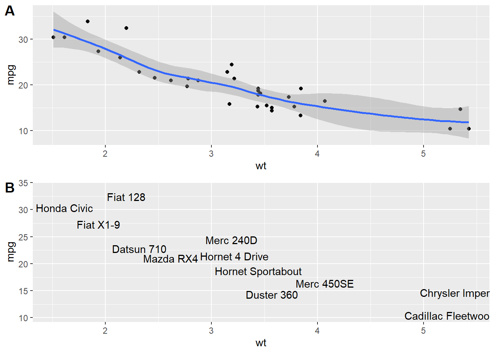
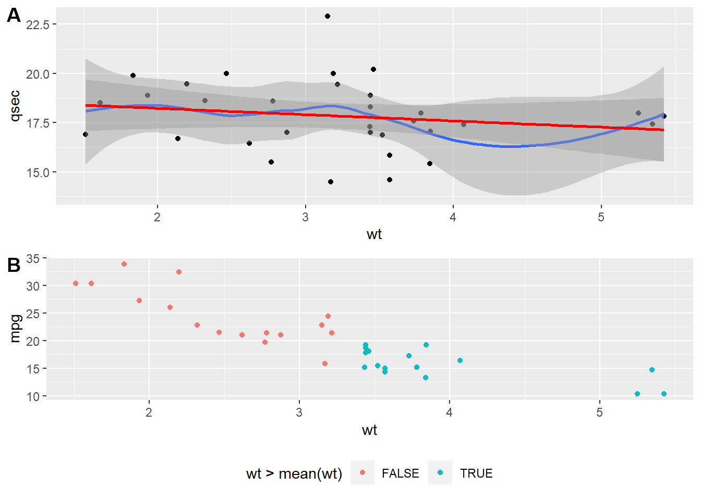
Cvičenie 6.6 (DÚ 2.5 (voľby NRSR 2023)) Stiahnite si volebné dáta z nedávnych volieb do NRSR.
Vyberte si dve ľubovoľné politické strany, ktoré získali vo voľbách viac ako \(3\%\) a zobrazte, aký bol pomer počtu hlasov pre tieto politické strany ku všetkým iným politickým stranám. Pozrite sa na tento vzťah osobitne cez rôzne kraje a cez územné obvody. Zvoľte vhodný typ vizualizácie a dotiahnite detaily.
Cvičenie 6.7 (DÚ 2.6 (vymyslený zamestnanci)) Preskúmajte korelácie medzi premennými z vymysleného datasetu o zamestancoch.
Popíšte vaše pozorovania, skúste ich vysvetliť a korelácie rozumne zvizualizujte.